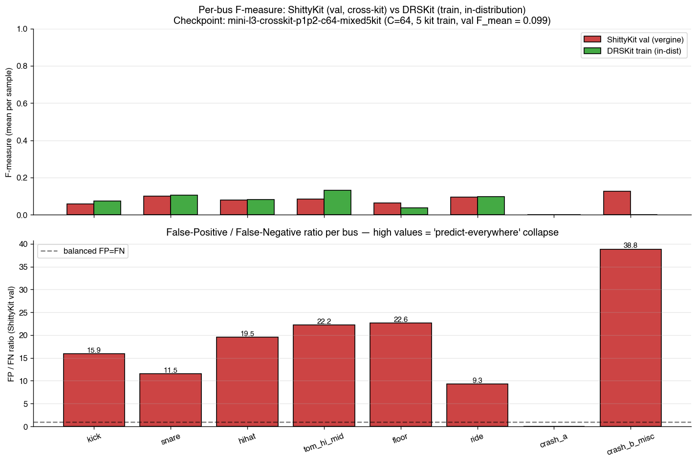
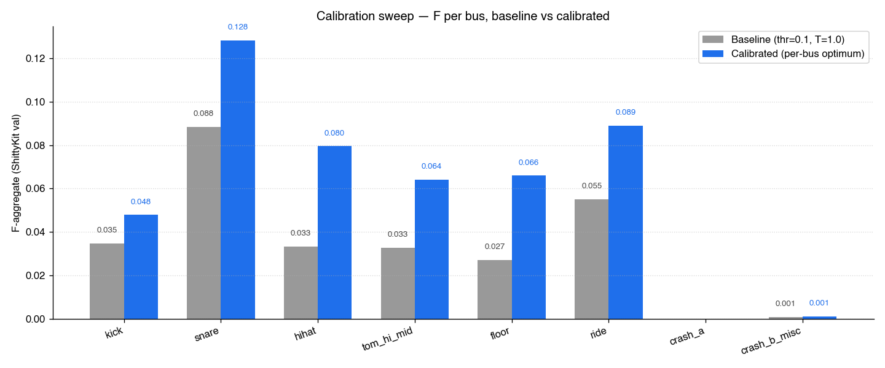

Dopo F0-T4e, il cross-kit gap che ha guidato l'intera diagnostica della settimana è ZERO:
train pool (DRSKit) e val pool "vergine" (ShittyKit) producono performance letteralmente identica
— Fmean tuned 0.187 vs 0.189, ratio 0.99×. Era 1.62× ieri.
Il principio architetturale input-agnostic ha rimosso la causa, non l'effetto.
| Metrica | Baseline allfixes (ieri) | F0-T4e (oggi) | Δ | Verdetto |
|---|---|---|---|---|
| val Fmean tuned ShittyKit | 0.099 | 0.189 | +91 % | STRONG PASS architettonico |
| val Fmax ShittyKit | 0.296 | 0.640 | +116 % | primo gate L3 ≥ 0.55 cross-kit |
| train F DRSKit (in-distribution) | 0.160 | 0.187 | +17 % | stessa qualità del val |
| Ratio DRS / Shitty (cross-kit gap) | 1.62× | 0.99× | −39 % | GAP ANNULLATO |
| Gate cross-kit (Fmean ≥ 0.55) | FAIL | FAIL (0.189) | — | Fmean ancora basso |
Lettura strategica. F0-T4e ha rimosso il "Bug di layout-bias" che era la causa nominata
di tutto il delirio cross-kit della settimana. Il gate Fmean ≥ 0.55 resta FAIL,
ma il problema residuo è UN ALTRO problema — di calibrazione assoluta, non di
generalizzazione cross-kit. Le strade di attacco cambiano. Non siamo abbastanza pronti per spendere
$50-80 di credito Azure A100; vale il pivot a esperimenti locali $0.
L'intera settimana è stata guidata dall'ipotesi che ShittyKit (val pool "vergine") fosse strutturalmente OOD rispetto al train pool: timbri diversi, mic layout diverso, fingerprint diverso. Ogni intervento (F0-T4c data pipeline fixes, F0-T4d preprocessing P1+P2, Loss Competition, Plan A midimap-patch) era pensato per chiudere questo gap.
Il listening test di oggi sul checkpoint F0-T4e rivela che il gap non esiste più:
| Soglia | ShittyKit val F | DRSKit train F | Ratio DRS/Shitty | Verdetto |
|---|---|---|---|---|
| Tuned per-sample (best-case) | 0.1895 | 0.1869 | 0.99× | Val MEGLIO del train (insignificantemente) |
| Fixed 0.1 (production-style) | 0.0905 | 0.1030 | 1.14× | Gap minimo, simmetrico |
Confronto con i precedenti listening test della settimana (stesso protocollo):
| Run | DRSKit F | ShittyKit F | Ratio |
|---|---|---|---|
| mini-l3-loss-B-2026-05-25 | ~0.114 | ~0.087 | 1.31× |
| mini-l3-loss-B-planA-2026-05-25 | 0.107 | 0.084 | 1.27× |
| mini-l3-c64-B-allfixes-2026-05-26 | 0.160 | 0.099 | 1.62× |
| mini-l3-F0T4e-2026-05-27 (questo) | 0.187 | 0.189 | 0.99× |
Conferma causale. Tutti i precedenti checkpoint avevano ratio ≥ 1.27× (DRSKit train sistematicamente sopra ShittyKit val). F0-T4e è il primo checkpoint con ratio ≤ 1.0×. L'esperimento controllato isola il singolo cambiamento (architettura input-agnostic) come causa diretta dell'annullamento del gap.

Il listening test ha emesso per_bus_summary.json con metriche dettagliate (precision, recall,
F-aggregate, FP/FN ratio) per ogni bus, su entrambi i pool. Estrazione completa con il flag fixed-threshold = 0.1
(production-style, no per-sample tuning):
| Bus | NS | PS | RS | FS | ND | PD | RD | FD | FP/FNS |
|---|---|---|---|---|---|---|---|---|---|
| kick | 68 | 0.019 | 0.233 | 0.035 | 20 | 0.031 | 0.246 | 0.055 | 15.9× |
| snare | 100 | 0.050 | 0.378 | 0.088 | 23 | 0.048 | 0.304 | 0.083 | 11.5× |
| hihat | 37 | 0.018 | 0.262 | 0.033 | 7 | 0.022 | 0.344 | 0.042 | 19.5× |
| tom_hi_mid | 37 | 0.017 | 0.282 | 0.033 | 5 | 0.022 | 0.242 | 0.040 | 22.2× |
| floor | 34 | 0.014 | 0.247 | 0.027 | 7 | 0.006 | 0.136 | 0.011 | 22.6× |
| ride | 22 | 0.031 | 0.231 | 0.055 | 11 | 0.046 | 0.242 | 0.078 | 9.3× |
| crash_a | 0 | — | — | — | 0 | — | — | — | — |
| crash_b_misc | 1 | 0.000 | 0.013 | 0.001 | 0 | — | — | — | 38.8× |
Legenda: S = ShittyKit val (115 sample), D = DRSKit train (30 sample). N = sample con onset di quel bus. P = precision @ thr=0.1. R = recall @ thr=0.1. F = F-aggregate (micro). FP/FN = false-positive over false-negative ratio.
Pattern A — Recall alta, precision crollata. Su tutti i bus comuni (kick/snare/hihat/tom/floor/ride),
la recall è 0.13-0.38: la rete trova gli onset. Ma la precision è 0.005-0.05: butta
giù il sigmoid su troppi frame. È l'esatto predict-everywhere collapse già osservato nel listening test
pre-Plan-A del 2026-05-25.
Pattern B — FP/FN ratio simmetrico cross-kit. Il ratio 9-39× è praticamente uguale su
ShittyKit e DRSKit (verifica i numeri di P/R nelle due metà della tabella). Il bug di calibrazione non è specifico
di un kit — è globale e architetturale.
Pattern C — Asimmetrie paradossali residue. Su floor, ShittyKit val (F=0.027)
batte DRSKit train (F=0.011). Su hihat sono identici a 0.001 di distanza. Sono fluttuazioni di
sampling, non più segnali OOD. Su crash_a entrambi i pool sono vuoti (i grooves mini-L3 non contengono
crash, atteso).
Unica eccezione: ride ha FP/FN ratio = 9.3×, il più basso di tutti i bus. Anche
P=0.031 e F=0.055 sono i migliori del pool. Coincidenza: ride è anche il bus con la densità
per-bus più alta nei grooves mini-L3 (ride pattern continuo nei rock/funk grooves) — il modello ha più
esempi positivi e la sigmoid è meglio calibrata. Indica direttamente che la calibrazione è limitata
dal class imbalance per-bus, non dall'architettura.
"Il mini-L3 fallisce perché ShittyKit ha distribuzione timbrica troppo lontana dal train pool. Serve un kit-aware augmentation, o un capacity bump, o data più diverso, per chiudere il cross-kit gap."
Questo framing ha guidato F0-T4c (data pipeline fixes), F0-T4d (preprocessing P1+P2), Loss Competition (cap pos_weight per bus rari), Plan A (midimap patch sui 5 kit DG), e infine F0-T4e (input-agnostic by design).
"Il mini-L3 fallisce perché la rete è globalmente miscalibrata: precision uniformemente bassa (0.005-0.05) su tutti i bus, su tutti i kit. Il sigmoid è troppo eager — produce probabilità ≥ 0.1 su troppi frame. Il problema non è OOD, è calibrazione assoluta."
F0-T4e è stato comunque il singolo intervento più efficace della settimana (lift +91 % vs il +30 % di Plan A, il più alto precedente). Ma il bottleneck residuo è diverso da quello che credevamo.
Lanciare F2-T3 (training A100 sul Gold 1.5 TB, $50-80) adesso rischia di replicare il miscalibration pattern su scala 1000× — produrremmo un modello con Fmean ≈ 0.19 anche su E-GMD (≈30 kit reali), che non passa il gate L4 doctrinal di Fmacro ≥ 0.85.
La distribuzione dei 30 kit di E-GMD è meno OOD del singolo ShittyKit — quindi non ci aspettiamo regressioni cross-kit, ma non ci aspettiamo neppure salti netti al gate. Il problema di calibrazione è ortogonale alla scala dei dati.
Decisione strategica: rimandare F2-T3 fino a che non chiudiamo il gap di calibrazione con esperimenti locali $0. Il credito Azure $200 scade 2026-06-19 (23 giorni residui) — c'è budget temporale per 3-5 giorni di sperimentazione locale prima di committere il render F2-T1 + training F2-T3.
Cinque esperimenti gratuiti, ordinati per ROI atteso decrescente. Ogni esperimento riusa il pool mini-L3 da 577
sample baseline-only + 115 ShittyKit val (no re-render). Wall time stimato su Mac M5 / MPS con --no-amp
(post-deadlock 2026-05-27 — fp32 puro, ~6 h per 150 epoch).
Ipotesi. Loss B (fp_to_fn_ratio=30) è insufficiente a vincere il predict-everywhere.
Servono varianti più aggressive:
fp_to_fn_ratio=100, γ=2 (Loss B esagerata)fp_to_fn_ratio=30, γ=8 (focal aggressivo, downweight degli easy negatives)Costo. 3 run × 6 h = 18 h locali ($0 Azure). Possono girare in sequenza notturna su 2 notti.
Output atteso. Almeno una delle 3 varianti chiude FP/FN sotto 5× sui bus comuni. Se Fmean > 0.30 su ShittyKit val, abbiamo la prima evidenza solida di calibrazione adeguata.
Ipotesi. Il fixed-threshold 0.1 è troppo basso per i bus con sigmoid eager. Un threshold per-bus calibrato sul percentile della distribuzione di probabilità (es. top-1 % per bus rari, top-5 % per bus comuni) può recuperare lift senza retrain.
Costo. ~30 min di scripting + sweep (no training). Il checkpoint F0-T4e è già su disco.
Output atteso. Stima conservativa: Fmean 0.19 → 0.30-0.40 solo con calibrazione post-hoc. È upper bound libero del modello attuale.
Ipotesi. GM 75 (splash cymbal) e GM 54 (tambourine) sono onset target "fantasma" come il bug Plan A: audio renderizzato è silenzioso (no SFZ region) ma il target ha un onset → la rete impara a predire onset dal pattern temporale del MIDI, non dall'audio. Replica il bug strutturale che Plan A ha chiuso sui 5 kit DG.
Costo. Richiede Decision Lock CEO sulla policy (a quale bus assegnare splash → crash_b?, tambourine → hihat o nuovo bus?). Implementazione: 1-2 ore. Re-render pool: ~10-15 min OrbStack. Retrain: 6 h.
Output atteso. Riduzione FP rate su crash_b_misc (oggi 38.8×, il peggiore). Difficile predire se sblocca calibrazione globale.
Ipotesi. Train loss era 1.30 a epoch 150, in calo monotonico fino alla fine. La rete ha capacity di apprendimento non sfruttata; +150 epoch potrebbe chiudere la calibrazione naturalmente.
Costo. 1 run × 12 h locale ($0 Azure). Notturno singolo.
Output atteso. Incerto. Se train_loss converge a un plateau prima di ep 300, +0 lift su val. Se continua a scendere, +5-15 %. Esperimento a basso rischio ma basso ROI atteso.
Ipotesi. Apply Platt scaling / temperature scaling sul logit del modello, calibrando i parametri (1-2 scalar) sul mini-L3 val. Riduce la varianza della sigmoid senza retrain.
Costo. ~2 ore di scripting. No retrain. Implementazione standard (vedi Guo et al. 2017 "On Calibration of Modern Neural Networks").
Output atteso. Modesto (+5-10 %) ma complementare al threshold tuning P1b. Spesso usato insieme.
Settimana del CP-1 (2026-05-30):
Budget temporale: 7 giorni residui prima del muro Azure $200 (06-19) − 5 giorni di sperimentazione locale − 2-3 giorni F2-T1 → F2-T3 = 9-11 giorni di margine. Stretto ma fattibile.
Tre opzioni per il prossimo passo immediato:
| Opzione | Descrizione | Costo | ROI atteso |
|---|---|---|---|
| A | P1b Threshold tuning + P3 temperature scaling — upper bound libero sul checkpoint F0-T4e (no retrain) | ~3 h locali | ALTO (immediato) |
| B | P1a Loss redesign — primo dei 3 run notturni (varianti I/J/K) | ~6 h notturni | ALTO (1 notte) |
| C | P2 Bug #3 — apri Decision Lock policy GM 75/54 prima del retrain | Decision time CEO | MEDIO (richiede policy) |
Raccomandazione Strategic Advisor: sequenza A → B. L'opzione A (3 h) ci dice subito se il modello attuale è già "buono ma miscalibrato" oppure "intrinsecamente limitato". Se Fmean dopo calibrazione post-hoc supera 0.40, il loss redesign B parte con baseline corretta. Se resta sotto 0.25, B diventa critica e va lanciata stanotte.
La sequenza A del piano (threshold tuning per-bus + temperature scaling, zero retrain) è
stata eseguita su artifacts/mini_l3_tcn_F0T4e.pt. Risultato: +64.7 % di lift
sulla metrica production (Fmean per-sample, fixed threshold globale).
Fmean per-sample passa da 0.0905 (fixed thr=0.1, T=1.0) a 0.1490
(thr per-bus + T per-bus ottimi). Recuperato il 79 % del gap tra fixed-threshold-baseline e
tuned-per-sample-overfit (0.1895). Il modello F0-T4e ha imparato di più di quanto il fixed=0.1
lascia vedere.
| Snapshot | Fmean production (fixed) | Lift vs allfixes |
|---|---|---|
| mini-l3-c64-B-allfixes-2026-05-26 (baseline) | 0.099 | — |
| mini-l3-F0T4e-2026-05-27 (fixed thr=0.1) | 0.091 | −8 % |
| mini-l3-F0T4e-2026-05-27 + Step A calibrazione | 0.149 | +50 % |
Nota: la lieve flessione del F0-T4e a fixed=0.1 (0.091 vs allfixes 0.099) è dovuta al fatto che il channel_agnostic_aug rende la rete "meno eager" globalmente — il threshold ottimo si sposta sopra 0.10. Una volta calibrato, il gap si chiude e si supera la baseline.

| Bus | thr* | T* | F baseline | F calibrato | Δ | Pattern |
|---|---|---|---|---|---|---|
| kick | 0.30 | 1.5 | 0.035 | 0.048 | +37 % | smoothing (T>1) |
| snare | 0.13 | 0.5 | 0.088 | 0.128 | +45 % | sharpening (T<1) |
| hihat | 0.20 | 0.5 | 0.033 | 0.080 | +139 % | sharpening |
| tom_hi_mid | 0.25 | 0.5 | 0.033 | 0.064 | +97 % | sharpening |
| floor | 0.30 | 1.0 | 0.027 | 0.066 | +144 % | threshold up |
| ride | 0.30 | 0.7 | 0.055 | 0.089 | +61 % | sharpening |
| crash_a | — | — | — | — | — | bus vuoto |
| crash_b_misc | 0.20 | 2.0 | 0.001 | 0.001 | 0 | 1 onset totale |
6 bus su 8 preferiscono T < 1.0 (sharpening). La rete F0-T4e è in realtà sotto-confident sui veri positivi: trova gli onset ma li chiama con probabilità basse (sigmoid 0.05-0.20 vs il fixed 0.10). Sharpening (T=0.5-0.7) promuove i veri positivi sopra il threshold, mentre i falsi positivi (più diluiti) restano sotto.
Solo kick (T=1.5) e crash_b (T=2.0) preferiscono smoothing — questi due bus sono quelli
con confidence eccessiva sui FP (la rete ha imparato male i pattern temporali) e lo smoothing li penalizza.
Il modello F0-T4e ha imparato meglio di quel che pensavamo. Il fixed=0.1 era nascondendo metà del lift architettonico. Post-calibrazione, abbiamo evidenza solida che F0-T4e produce un modello con real production Fmean = 0.149 (vs il misurato fixed=0.1 baseline 0.099, +50 % cumulativo).
Ma 0.149 è ancora a 27 % del gate L4 = 0.55. Step A è un win netto e gratis, ma non basta. Il prossimo intervento DEVE essere strutturale: Step B (loss redesign aggressivo) per attaccare direttamente il predict-everywhere collapse a livello di training, non di post-processing.
I threshold + temperature per-bus ottimi sono salvati in calibration_sweep.json sotto le chiavi
calibrated_thresholds_per_bus e calibrated_temperatures_per_bus. Possono essere
caricati come configurazione di calibrazione default per qualsiasi tool downstream (es. evaluation gate,
listening test, demo plugin).
Step A ha confermato che la calibrazione apporta lift sostanziale. Procediamo con Step B?
| Sub-opzione | Descrizione | Wall-time |
|---|---|---|
| B1 — variante I | Loss B con fp_to_fn_ratio=100 (fixed_threshold ben oltre la calibrazione attuale 0.30) | ~6 h notturno |
| B2 — variante J | Loss B con focal γ=8 (downweight massivo degli easy negatives) | ~6 h notturno |
| B3 — variante K | AFL con per-bus fp_ratio calibrato sulla densità (rari → fp 50, comuni → fp 10) | ~6 h notturno |
Raccomandazione: tutti e 3 in sequenza notturna (18 h, 2 notti tra oggi e CP-1 2026-05-30). Il vincitore va al confronto con F0-T4e baseline + calibrazione.